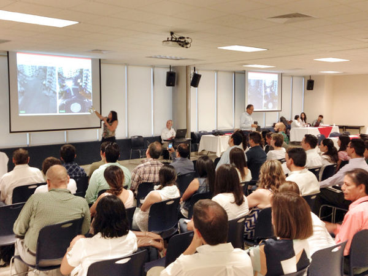
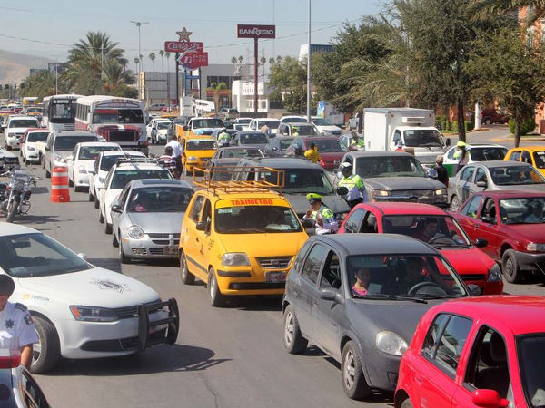
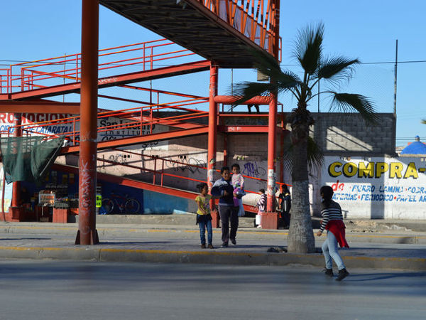
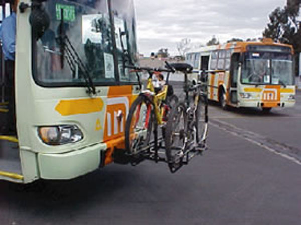
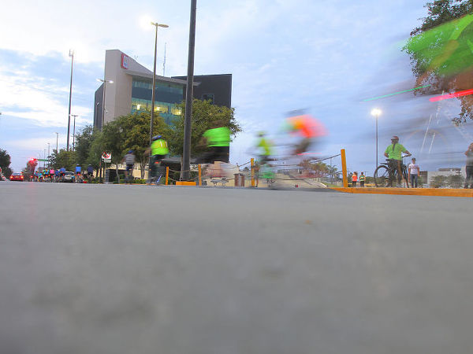

El pasado viernes 14 de agosto de 2015, se llevó a cabo el primer taller de planeación participativa para la elaboración del Plan Director de Movilidad no Motorizada, el cual pretende ser el instrumento de planeación urbana que ordene las estrategias y acciones para implementar un sistema de movilidad de modos peatonales y ciclistas.
En el evento, participaron distintos grupos de la sociedad civil organizada como colectivos ciclistas, peatonales, funcionarios de la administración municipal, y demás interesados en los temas de la movilidad urbana.
Pero más allá del concepto obvio que indica el término; ¿Qué es la movilidad no motorizada? Ésta se define como el conjunto de desplazamientos o modos de transporte donde la principal fuerza motriz utilizada es la generada por nuestro propio cuerpo, es decir todas las formas de movilidad donde no se requiere un motor. Generalmente se suele dividir el concepto en dos grupos principales: peatones y ciclistas. Donde el primer grupo incluye conceptos como “peatones sobre ruedas” que pueden ser personas en patines, patinetas, personas en silla de ruedas etc. Por otra parte, los ciclistas incluyen principalmente personas en bicicleta, pero también son considerados grupos en triciclo, monociclo y otros vehículos donde el pedal es el mecanismo de tracción. El aspecto importante es que todos son personas moviéndose, más allá del vehículo que utilicen.

En el taller de participación, asesorado por el Arq. Rafael Pérez Fernández, se definieron visiones, objetivos y metas a través de metodologías basadas en el marco lógico. Los asistentes participaron en mesas de trabajo articuladas en base a cuatro ejes temáticos: redes de infraestructura, educación y seguridad vial, normatividad técnica y legal, y programas de fomento. Con temas transversales como movilidad peatonal, movilidad ciclista, intermodalidad y visión cero.
Para poder comprender de forma sintetizada los resultados del taller, se presentan 5 claves básicas para ubicar los esfuerzos y principios que tienen que realizarse para poder implementar un sistema de movilidad no motorizada:

1) El automóvil NO es la única opción
La Laguna, como muchas otras ciudades del norte de México, ha desarrollado a lo largo de su historia un crecimiento urbano basado casi exclusivamente en torno a la forma en que los coches se desplazan: planeación a través del “urbanismo del automóvil”. Esto ha relegado a los otros modos de transporte (transporte público, ciclista y peatonal) a ser percibidos como desplazamientos para sectores con bajo estatus social. Contrario a lo que ocurre actualmente en países desarrollados, donde se puede observar que desde un obrero hasta un ejecutivo, viajan en transporte público o bicicleta. Es aquí donde ubicamos un primer aspecto fundamental: el problema es cultural.

2) Primero infraestructura
La distribución modal actualmente en la ZML para peatones y ciclistas es de 19% y 2% respectivamente (Logit, 2011) del total de viajes que se hacen diariamente.
¿Por qué son tan bajos estos estos índices de movilidad? Hay distintos factores que influyen en ello: comodidad, clima, velocidad, estatus social etc. Pero la deficiencia de infraestructura es un aspecto fundamental. No es posible convencer a la población de utilizar modos alternativos de transporte, si la integridad física de las personas es puesta de por medio. Para ello, es necesario la redistribución del espacio vial de manera democrática para lograr la seguridad de las personas que se desplazan en modos no motorizados. Como su nombre lo indica, la infraestructura es la base que da sustento a las actividades que ocurren en una estructura social; por lo tanto, más allá de la educación, cultura y normatividad, las redes de infraestructura son el primero paso a dar en la implementación de un sistema de movilidad no motorizada. Estas deben estar interconectadas, con recorridos lógicos y directos, así como cumplir con los lineamientos y estándares mínimos de calidad y seguridad. Solo así se podrá situar a la “movilidad alternativa” como modo de transporte cotidiano y competir con los medios motorizados.

3) El clima es importante pero NO determinante
Uno de los argumentos recurrentes que se mencionan para cuestionar la efectividad de la movilidad no motorizada, es el clima extremoso con el que cuenta la región de la Laguna. Si bien es cierto que las temperaturas máximas medias entre Mayo y Julio sobrepasan los 32° y no es nada sencillo desplazarse de forma no motorizada en este clima; también es cierto que el resto de los meses contamos con un clima bastante aceptable para movernos de forma no motorizada. A su vez, la ciudad tiene oportunidades como su bajo índice de precipitación, así como su topografía plana, condiciones óptimas para desarrollar modos alternativos de movilidad.
¿Qué ciudades tienen condiciones parecidas a la nuestra?
Un ejemplo es Sevilla, España: Categorizada en el número 10 como ciudad ciclista por el ranking Copenhagenize, 2015 y considerada la mejor ciudad española para andar en bicicleta. Todo esto con temperaturas máximas medias de 36° entre Julio y Agosto.

4) Cambiar entre distintos modos de transporte
No se trata de ser “purista” de la movilidad y desplazarse únicamente en un solo modo de transporte. La intermodalidad, es decir la articulación entre las diferentes formas de movilidad es clave al momento de desarrollar un sistema de movilidad integral y sustentable. Es claro que no es posible caminar o andar en bicicleta a todos los destinos de la ciudad (en especial en una tan poco densa como la nuestra), es aquí donde el intercambio modal es un factor clave.

5) Visión Cero
Torreón se presentó como el primer municipio a nivel nacional en adoptar la visión cero de manera oficial. Pero, ¿Qué es la Visión Cero? En pocas palabras, es lograr que haya cero víctimas por violencia vial; desde la primicia que todos los accidentes no son “accidentales”, y pueden ser prevenidos a través de buen diseño vial, educación, y normatividad. Los peatones y ciclistas, al ser los usuarios más vulnerables de la pirámide de la movilidad conforman el grupo más beneficiado al implementar políticas de Visión Cero. Al aumentar la seguridad para estos grupos, su número se elevará de manera automática y viceversa.
El Plan Director de Movilidad no motorizada, propone acciones estratégicas a través de proyectos en corto, mediano y largo plazo. Todo ello, con el último fin de elevar la calidad de vida y contar con una ciudad más humana, incluyente y segura. Estamos en un tiempo idóneo para comenzar con acciones como éstas, no esperemos a “tocar fondo” como ciudades donde la movilidad cotidiana se ha vuelto insostenible y ya es imposible volver atrás. De la mano de una planeación urbana integral, ordenada y eficaz, podremos lograr movernos en nuestra metrópoli eficientando nuestros recursos actuales, sin comprometer los de las generaciones futuras.
Fuente consultada
- Resumen del Plan Integral de Movilidad Urbana Sustentable. Logit 2011.